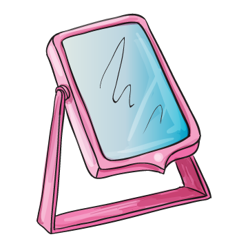
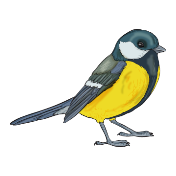

4. Ha meghallgattad a mesét, akkor válaszolj a következő kérdésre úgy, hogy kattints egyet a helyes válaszok képére!
Mi nem volt elég édes a medvének?
Ha meghallgattad a mesét, akkor válaszolj a következő kérdésre úgy, hogy kattints egyet a helyes válaszok képére!
Mi nem volt elég fényes?

Ha meghallgattad a mesét, akkor válaszolj a következő kérdésre úgy, hogy kattints egyet a helyes válaszok képére!
Kivel találkozott medve koma
az erdő szélén?

Ha meghallgattad a mesét, akkor válaszolj a következő kérdésre úgy, hogy kattints egyet a helyes válaszok képére!
Mit tűzött a medve a kecske szarvának helyébe?